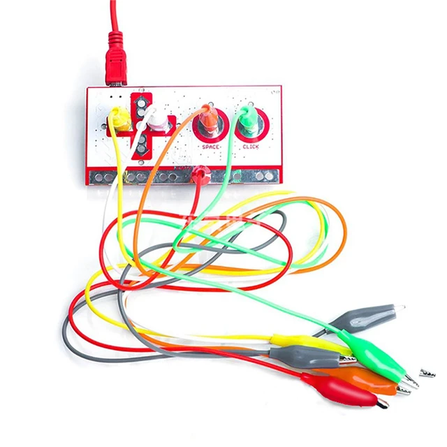

makey makey
makey makey dit was een groepsopdracht deze vond ik wel mijn zelfvertrouwen boosten omdat ik hier al het een en ander van weet dus ik kan het docenten vertellen hoe het moet. dit boost natuurlijk wel je zelfvertrouwen. Het leukste hier was dat we de stroom van verdieping 7 er per ongeluk af hebben gegooid (stoppen door laten slaan) dus dat was wel leuk. dit kwam door een verwarminkje.
